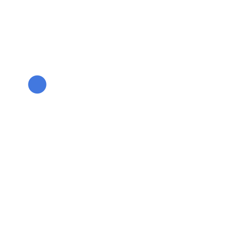

<!DOCTYPE html>
<html id="baseHtml">
  <head>
    <meta charset="utf-8" />
    <title>SevenTask</title>
    <base href="/" />

    <meta name="viewport" content="width=device-width, initial-scale=1" />
    <link rel="icon" type="image/x-icon" href="assets/icons/7Task-New-Logo.svg" />
    <link href="https://fonts.googleapis.com/css?family=Roboto:300,400,500&display=swap" rel="stylesheet">
    <link href="https://fonts.googleapis.com/icon?family=Material+Icons" rel="stylesheet">
    <link rel="manifest" href="./manifest.json">
    <script>
      var width = window.innerWidth;
      var queries = window.location.href.split('https://app.seventask.com');
      if (width <= 480) {
        window.location.href = 'https://mobile.seventask.com' + (queries.length > 1 ? queries[1] : '');
      }
      screenSizeFix();
      function screenSizeFix(){
        var baseScreen = 1440;
        var currentScreenSize = window.innerWidth;
        var screenPrecent = (currentScreenSize * 100) / baseScreen;
        document.getElementById("baseHtml").style.fontSize = screenPrecent + "%"
      }
      window.addEventListener("resize", screenSizeFix);
    </script>
    <script>
      if (CSS && 'paintWorklet' in CSS) CSS.paintWorklet.addModule('/assets/paint.js')
    </script>
<!--    <script src='https://meet.jit.si/external_api.js'></script>-->
    <script src='https://meet.seventask.com/external_api.js'></script>
  </head>
  <body>
    <app-root>
      <div class="my-overlay">
        <i class="fa fa-spinner fa-spin" aria-hidden="true"></i>
<!--        <seventask-spinner style="z-index: 200000000" aria-hidden="true" loadingType="3"></seventask-spinner>-->
<!--        -->
<!--  -->
      </div>
    </app-root>
  </body>
</html>
